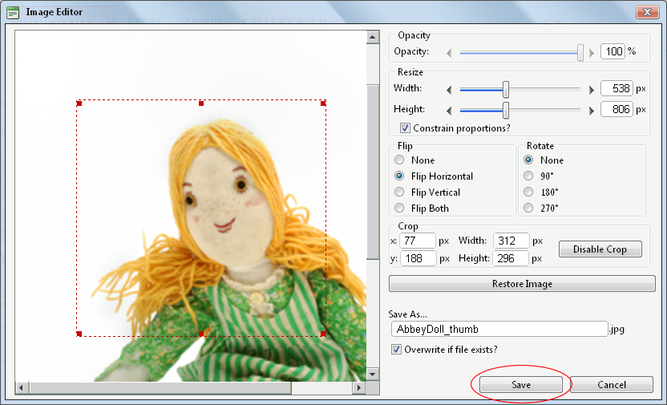

Working with the Image Editor
How to use the Image Editor tool in the Image Manager of the DotNetNuke.RadEditorProvider RTE.
Prerequisite. This topic assumes you are currently inserting a new image. See "Inserting Images"
- Click the Insert Media
 button and select Image Manager from the drop down list. This will open the Image Manager. (The keyboard shortcut is CTRL + G)
button and select Image Manager from the drop down list. This will open the Image Manager. (The keyboard shortcut is CTRL + G)
- Click the Image Media button to open the Image Editor.
- Select from these editing options:
- At Opacity, drag the slider to the preferred percentage (%) - OR - Enter the opacity percentage into the % text box.
- In the Resize section:
- At Constrain proportions? to lock the width/height ratio - OR - to allow the width and height to be modified independently.
- At Width and/or Height, drag the slider to the preferred image size - OR - Click the Decrease and Increase buttons. The pixel size is displayed in the respective Px text boxes to the right.
- At Flip, select a direction to flip the image from these options: None, Flip Horizontal, Flip Vertical, or Flip Both.
- At Rotate, select from None, 90, 180, or 270.
- At Crop, click the Enable Crop button. This displays a red box which defines the area to be cropped. You can now define the area to be cropped:
- In the X and Y text boxes, enter the X (vertical) and Y (horizontal) coordinates for the crop area.
- In the Width and Height text boxes, enter the width and height in pixels for the crop area.
- In the Save As... text box, a new name for this edited image is displayed. It is in the format of filename_thumb. Modify this name as desired. Tip: Remove the _thumb from the file name to override the original file. The image will be saved as a .jpg extension file.
- At Overwrite If File Exists? to overwrite a file that exists with the name entered in the Save As... text box - OR - if you don't want to override an existing file. This enables warning message if the filename already exists.
- Click the Save button.

Troubleshooting. If the message "A file with a name same as the target already exists!" is displayed, this is preventing you from overwriting an existing image. Repeat Steps 4 and 5.
Tip: When Cropping an image drag and resize the crop area on the preview image.